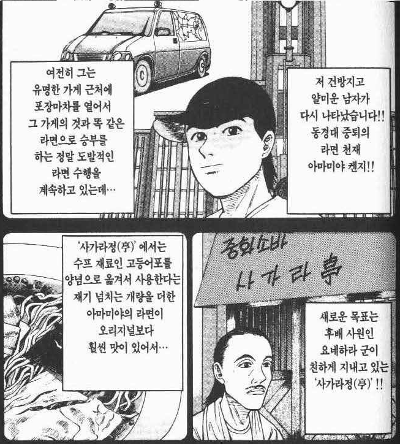
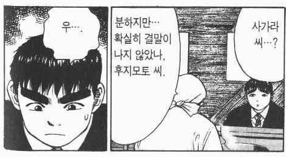
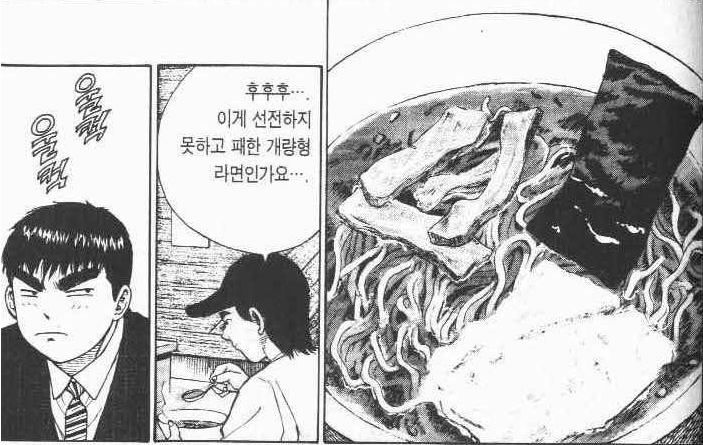
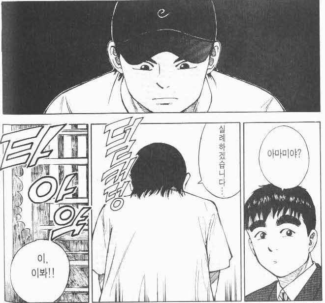
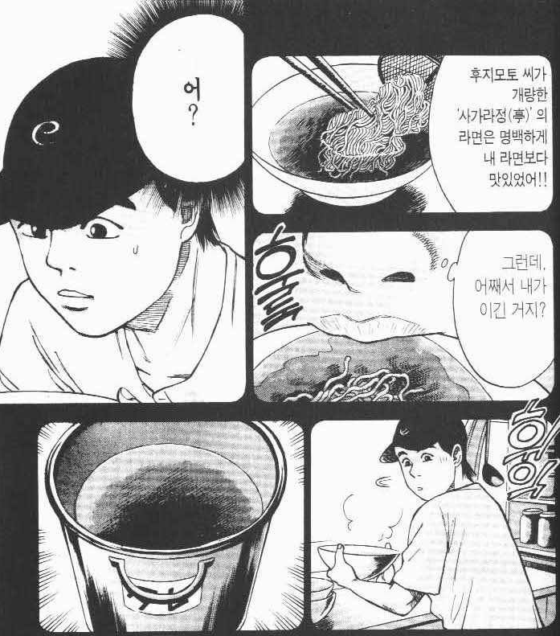
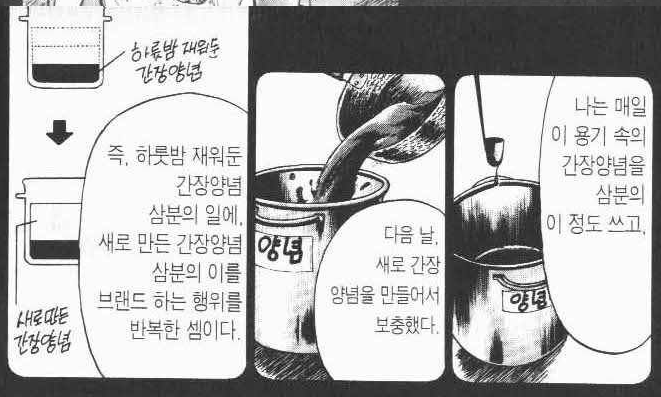
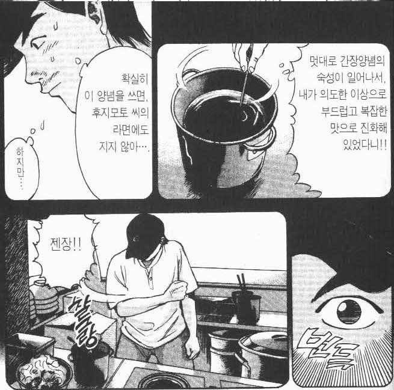

(좌) 라면요리왕의 주인공
(우) 다른 라면가게의 레시피를 COPY&개량해서 파는 빌런

주인공과 연이 있는 가게에 같은 짓 하다가 결국 주인공과 대결!

주인공 & 사가라정 연합 완패


주인공&사가라정의 개량된 라면을 조롱하러 왔는데
맛보고 갑자기 분위기가 이상해진 빌런
뭐?



라면요리왕이 효과 있다고 했음
(라면요리왕 6권)
라면요리왕 존잼이니 꼭 봐라
위생문제 아님?